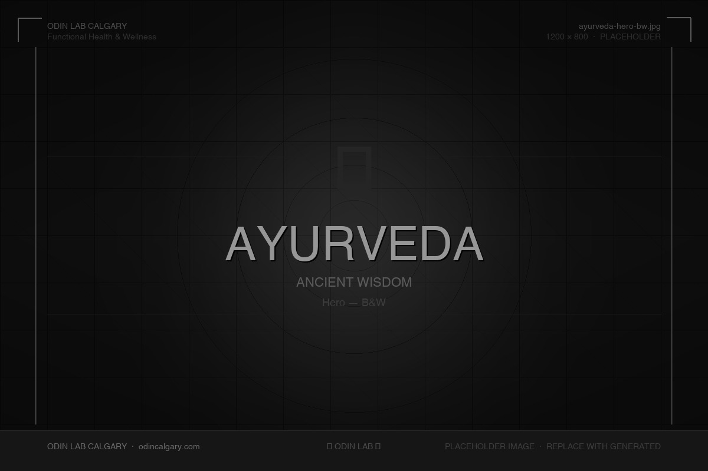
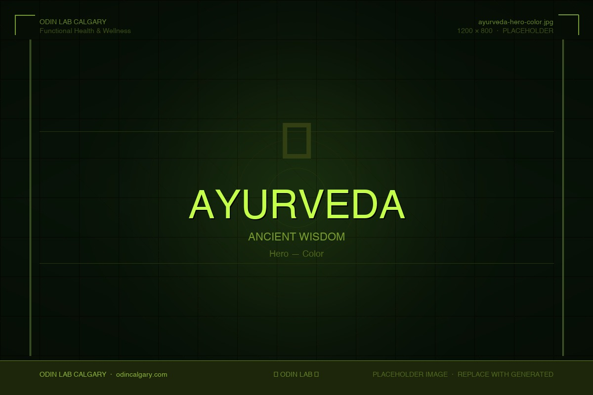
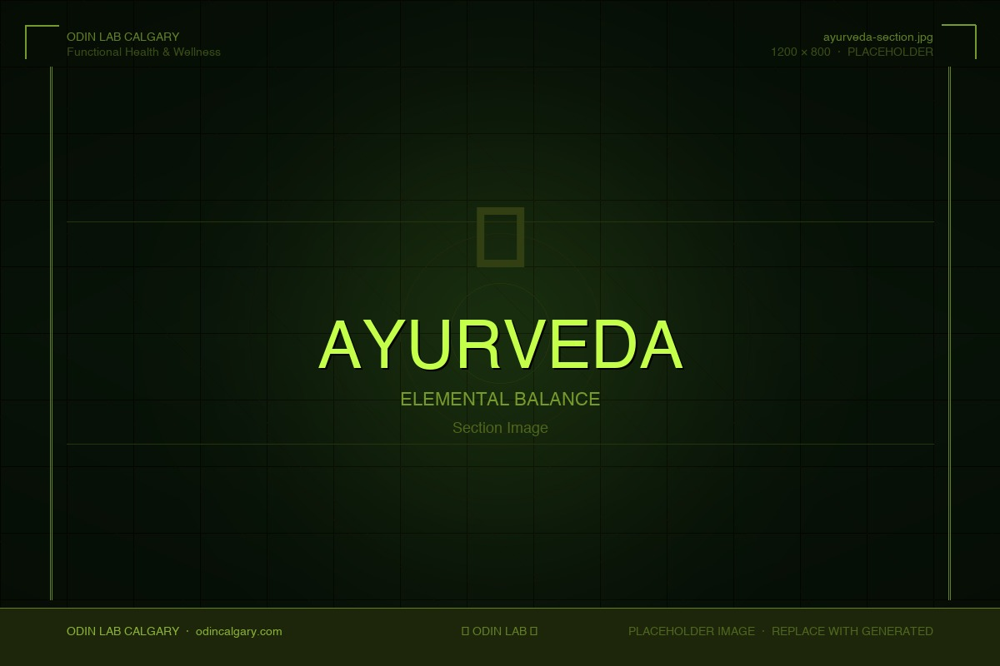

We Do Not Practice Medicine. We Practice Health.
Ancient Intelligence. Individual Precision. Lasting Health.
Ayurveda is a 5,000-year-old clinical system that identifies your unique physiological constitution and uses diet, lifestyle, and targeted protocols to restore balance at the root. At Odin Lab, we integrate Ayurvedic principles with functional health coaching to build interventions that fit your biology — not a generic template.


5,000 Years of Clinical Precision
Ayurveda — from the Sanskrit ayur (life) and veda (knowledge) — is one of the world's oldest continuously practiced systems of medicine, with documented roots in the Indian subcontinent stretching back over 5,000 years. Its foundational texts, the Charaka Samhita and Sushruta Samhita, codified a comprehensive framework for understanding human physiology, disease causation, and therapeutic intervention. Unlike symptom-suppression models, Ayurveda operates on a systems-level premise: disease is the downstream consequence of chronic imbalance, and lasting health is achieved by correcting the upstream conditions that allow imbalance to persist.
The philosophical backbone of Ayurveda rests on the concept of Prakriti — an individual's inherent constitutional type, determined by the dominant ratio of three bioenergies (doshas) present at birth. Prakriti governs how a person metabolizes food, responds to stress, maintains immune function, and experiences emotion. It is not a personality label; it is a functional map of how a specific physiology works. Alongside Prakriti, Ayurveda identifies Vikriti — the current state of imbalance relative to that baseline. The gap between Prakriti and Vikriti is where pathology begins, and where clinical intervention is directed.
Central to Ayurvedic theory is the Tridosha framework: three fundamental bioenergies — Vata, Pitta, and Kapha — each composed of two of the five classical elements (space, air, fire, water, earth). Every physiological and psychological function is governed by the interplay of these three doshas. Catabolism is regulated by Vata, metabolism by Pitta, and anabolism by Kapha. Health is the state in which all three are in equilibrium relative to one's Prakriti; disease emerges when any dosha accumulates beyond its baseline threshold or is depleted below it.
Modern research is beginning to validate what Ayurveda systematized millennia ago. The emerging field of Ayurgenomics has identified correlations between Prakriti types and distinct metabolic pathways, microbiome compositions, and genetic expression patterns. Studies published in peer-reviewed journals have found that Vata, Pitta, and Kapha individuals exhibit measurably different gut microbial profiles, cardiovascular risk markers, and inflammatory baselines. Ayurveda did not guess at individual variation — it built a clinical system around it.
The Charaka Samhita and Sushruta Samhita codified comprehensive frameworks for physiology, disease causation, and therapeutic intervention — making Ayurveda one of the oldest continuously practiced medical systems in human history.
Prakriti is your inherent constitutional type — a functional map of how your specific physiology works. Vikriti is your current state of imbalance. The clinical gap between them defines where intervention is directed.
The emerging field of Ayurgenomics has identified measurable correlations between Prakriti types and distinct gut microbiome compositions, metabolic pathways, and genetic expression patterns — validating what Ayurveda systematized millennia ago.
The Tridosha System
Three fundamental bioenergies govern every physiological and psychological function. Understanding your dominant dosha — and its current state of balance — is the starting point for all Ayurvedic intervention.
Vata is the dosha of movement. Its qualities are dry, light, cold, rough, subtle, and mobile. It governs all forms of motion in the body and mind — breathing, muscle contraction, nerve impulse transmission, circulation, and the movement of thoughts. Vata is considered the most influential of the three doshas, as it energizes and directs Pitta and Kapha.
Physical Traits- Slender frame
- Dry or rough skin
- Variable appetite
- Cold extremities
- Light, disrupted sleep
- Prominent joints
When balanced: creativity, mental agility, enthusiasm, adaptability, and an animated, perceptive quality of mind. Vata types learn quickly, think laterally, and bring an energizing quality to their environment.
Signs of Imbalance- Anxiety, worry, and mental restlessness
- Dry, flaky, or rough skin and brittle hair and nails
- Chronic constipation, bloating, or irregular digestion
- Insomnia or fragmented, non-restorative sleep
- Joint pain, stiffness, or cracking in the joints
- Fatigue and physical weakness not explained by exertion
- Scattered concentration, forgetfulness, and mental overload
- Cold intolerance and chronically cold hands and feet
Pitta is the dosha of transformation. Its qualities are hot, sharp, oily, light, mobile, and penetrating. It governs all metabolic and transformative processes — digestion, liver function, hormone production, skin integrity, and the processing of perception into understanding. Pitta represents the body's digestive fire (Agni) in its most concentrated form.
Physical Traits- Medium, muscled build
- Warm body temperature
- Oily or combination skin
- Sharp appetite
- Early greying or thinning
- Prone to redness
When balanced: sharp intellect, focused ambition, confident leadership, courage, and strong decision-making. Pitta types are organized, precise, and capable of sustained, high-quality output.
Signs of Imbalance- Acid reflux, heartburn, gastritis, or peptic ulcers
- Inflammatory skin conditions: acne, rosacea, eczema, boils
- Persistent heat sensations, night sweats, or hot flashes
- Irritability, impatience, and a short temper
- Excessive perfectionism and hypercritical thinking
- Loose stools, diarrhea, or hypersensitive digestion
- Inflammatory joint conditions or eye inflammation
- Intense hunger and strong negative mood response to missed meals
Kapha is the dosha of structure. Its qualities are heavy, slow, cool, oily, smooth, dense, and stable. It governs all structural and cohesive functions — building and maintaining tissues, lubricating joints, supporting immune defense, and providing the physiological substrate for endurance and stamina. Kapha is the anabolic force: it constructs, nourishes, and protects.
Physical Traits- Larger, sturdier frame
- Well-lubricated skin
- Thick hair
- Strong endurance
- Weight accumulation
- Slow recovery
When balanced: deep loyalty, emotional stability, patience, compassion, consistent follow-through, and the ability to sustain effort over time. Kapha types are grounded, dependable, and naturally soothing to those around them.
Signs of Imbalance- Unexplained weight gain and difficulty losing weight
- Persistent fatigue, lethargy, and low motivation
- Sinus congestion, excess mucus, or frequent respiratory infections
- Fluid retention and puffiness, particularly in the face
- Mental fog, dullness of thinking, and difficulty initiating tasks
- Depression, emotional withdrawal, or excessive attachment
- Oversleeping without feeling rested
- High cholesterol, sluggish thyroid, or blood sugar dysregulation
Traditional Wisdom. Modern Evidence.
Ayurveda did not hypothesize about individual variation — it built a clinical system around it. Peer-reviewed research is now confirming what these protocols have practiced for millennia.
Ayurveda classified Ashwagandha (Withania somnifera) as a Rasayana — a rejuvenating adaptogen that strengthens resilience to physical and mental stress. It was systematically prescribed for nervous system depletion, fatigue, and anxiety for over two millennia.
Multiple double-blind, placebo-controlled RCTs confirm that standardized Ashwagandha root extract significantly reduces serum cortisol, perceived stress, and anxiety. A 2023 RCT found ARE-500mg reduced morning salivary cortisol and increased urinary serotonin compared to placebo after 60 days. A 2024 systematic review and meta-analysis of 9 RCTs (558 patients) confirmed significant reductions in Perceived Stress Scale scores across trials.
Majeed M et al. (2023). Medicine (Baltimore); Meta-analysis, PubMed 2024.Ayurveda identified Agni (digestive fire) as the foundation of health, teaching that most disease originates from impaired digestion and the accumulation of Ama — undigested metabolic residue that obstructs physiological channels. Virtually every Ayurvedic intervention begins by restoring Agni.
Microbiome science now identifies gut permeability, dysbiosis, and impaired mucosal immunity as upstream drivers of systemic inflammation, autoimmunity, metabolic disease, and mood disorders. Published research confirms that Prakriti types exhibit distinct gut microbial compositions — Pitta types showing higher butyrate-producing species, Kapha types showing elevated Prevotella copri associated with insulin resistance.
Dey S et al. MDPI Medicine 2020, 56(9):462; Gut Microbiota Prakriti study, ScienceDirect 2025.Triphala — a combination of three Ayurvedic fruits (Amalaki, Bibhitaki, Haritaki) — has been used for over 2,000 years as a gastrointestinal tonic, anti-inflammatory agent, and rejuvenating formula. It is one of the most widely prescribed compounds in classical Ayurveda.
A 2021 systematic review of 12 controlled trials found Triphala reduced LDL cholesterol, total cholesterol, and triglycerides in 5 of 9 trials reporting lipid outcomes. Laboratory research confirms Triphala polyphenols modulate the gut microbiome, promoting growth of Bifidobacteria and Lactobacillus while inhibiting pathogenic species.
Phimarn W, Sungthong B, Itabe H. (2021). Integrative Medicine Research, SAGE Journals. DOI: 10.1177/2515690X211011038.Turmeric (Curcuma longa) has been used in Ayurveda for millennia as a primary anti-inflammatory, wound-healing, and digestive agent — classified as having hot, bitter, and astringent qualities that reduce Ama and pacify Pitta and Kapha. It was prescribed for inflammatory conditions, skin disease, and liver support.
A 2022 systematic review and meta-analysis confirmed that curcumin and Curcuma longa extract significantly reduced joint pain, stiffness, and inflammatory markers (CRP, TNF-α, IL-6, IL-1β) in patients with osteoarthritis and rheumatoid arthritis across multiple RCTs.
Zeng L et al. (2022). Frontiers in Immunology, 13: 891822. DOI: 10.3389/fimmu.2022.891822.The Five Pillars of Ayurvedic Practice
Ayurveda is not a collection of remedies — it is a complete system for living. These five pillars structure every clinical protocol at Odin Lab.
Structuring daily activities in alignment with the body's natural circadian rhythms and doshic cycles. A physiological strategy for reducing allostatic load through biological alignment — not a wellness ritual.
Adapting diet, lifestyle, and detoxification practices to the changing qualities of each season. As external conditions shift, the doshas shift accordingly — and the body's needs change with them.
The systematic use of food as medicine based on individual constitution, digestive capacity, season, and disease state. Food is classified not merely by macronutrient composition but by its inherent qualities and potency.
The full spectrum of lifestyle practices beyond diet: sleep hygiene, movement, emotional regulation, and the quality of sensory input. Disease arises not only from what is consumed but from how one lives.
Ayurveda's systematic purification protocol, designed to eliminate accumulated Ama and excess doshas from deep tissues. A 2024 clinical study found structured Panchakarma produced measurable shifts in gut microbial populations and reductions in systemic inflammation.

What We Offer at Odin Lab
Every Ayurvedic protocol at Odin Lab is individualized, evidence-informed, and integrated with your broader functional health picture.
Nadi Pariksha is the Ayurvedic diagnostic technique of reading the radial pulse at three positions — corresponding to Vata, Pitta, and Kapha — to assess dosha balance, digestive fire (Agni), tissue health, and the presence of accumulated Ama. At Odin, pulse assessment is one component of an integrated intake process that informs the construction of individualized protocols.
Ayurvedic herbal medicine employs single herbs and classical poly-herbal formulations — Triphala, Ashwagandha, Trikatu, Chyawanprash, and Brahmi — matched to the individual's constitution, current imbalance, and therapeutic objective. Herbs are not prescribed generically; their selection, dose, timing, and delivery method are individualized.
Ahara Chikitsa is Ayurvedic dietary therapy: the systematic use of food qualities, meal timing, food combinations, and seasonal adjustments to support Agni, reduce Ama, and restore doshic balance. Recommendations are built around your Prakriti and Vikriti, not a generic template. Food is prescribed with the same precision as herbs.
Lifestyle restructuring is among the most clinically impactful interventions Ayurveda offers. Odin builds structured Dinacharya frameworks — morning routines, sleep optimization, movement scheduling, sensory hygiene — that reduce allostatic load and establish the consistent biological rhythm the body requires for self-regulation.
Each seasonal transition creates a natural window for metabolic reset and elimination support. Odin offers guided seasonal cleansing protocols that may include elimination diet phases, targeted herbal support for Agni and Ama clearance, movement prescriptions, and sleep restructuring — calibrated to the season and the individual.
Ayurveda has an extensive tradition of mind-directed therapy — including breath practices (pranayama), meditation, and Rasayana (rejuvenating herbal tonics). At Odin, stress protocols integrate breath-based nervous system regulation, adaptogenic herbal support (Ashwagandha, Brahmi, Shankhpushpi), sleep optimization, and structured cognitive boundaries for reducing HPA axis dysregulation.
What Ayurveda Can Address
Ayurveda treats constitutions in imbalance — not diagnoses. These are the functional domains where Ayurvedic intervention has demonstrated measurable clinical impact.
By identifying the specific doshic pattern underlying a set of symptoms, Ayurvedic assessment identifies the functional root — not just what is wrong, but why it is wrong in this individual. This precision makes interventions more effective than population-averaged protocols.
Multiple peer-reviewed trials confirm the anti-inflammatory properties of core Ayurvedic herbs — including curcumin, Triphala, Amla, and Boswellia. Chronically elevated inflammation underlies cardiovascular disease, metabolic syndrome, autoimmune conditions, and accelerated aging.
Ahara Chikitsa, herbal support for Agni, and Ama-clearing protocols collectively improve gut motility, mucosal integrity, nutrient absorption, and microbiome composition — reducing systemic inflammation and improving mood, immune function, and nutrient utilization.
Ayurvedic adaptogenic herbs — particularly Ashwagandha — have demonstrated in multiple RCTs the capacity to reduce serum cortisol, lower perceived stress, improve sleep quality, and attenuate anxiety. Combined with Dinacharya and breathwork, these protocols address HPA axis dysfunction directly.
Ayurvedic interventions targeting Kapha imbalance address the metabolic underpinnings of weight dysregulation, insulin sensitivity decline, lipid abnormalities, and thyroid sluggishness. A 2021 systematic review found Triphala produced significant reductions in LDL cholesterol and triglycerides across multiple controlled trials.
Dinacharya protocols establish a consistent biological rhythm that stabilizes the circadian clock, reduces cortisol at night, and improves sleep architecture. Improved sleep quality has measurable downstream effects on metabolic health, immune function, mood regulation, and cognitive performance.
Ayurveda is fundamentally a preventive system — its goal is to maintain the health of the healthy before disease manifests. Regular assessment of Prakriti and Vikriti, seasonal cleansing, and adaptive lifestyle protocols create a framework for early detection and correction of imbalances before they consolidate into pathology.
Ayurveda recognizes that psychological stress, emotional patterns, and mental habits are not separate from physiology — they directly shape dosha balance, Agni function, immune activity, and tissue health. Protocols addressing the psychological dimension produce physiological effects that diet and exercise alone cannot replicate.
The Science Behind Ayurveda
Every protocol at Odin Lab is grounded in published clinical and mechanistic research. The following citations represent key findings from the Ayurvedic medicine literature.
"Efficacy and Safety of Curcumin and Curcuma longa Extract in the Treatment of Arthritis: A Systematic Review and Meta-Analysis of Randomized Controlled Trial." Found curcumin and Curcuma longa extract significantly reduced joint pain, stiffness, and inflammatory markers (CRP, TNF-α, IL-6) compared to placebo across multiple RCTs in osteoarthritis and rheumatoid arthritis patients.
"A standardized Ashwagandha root extract alleviates stress, anxiety, and improves quality of life in healthy adults by modulating stress hormones." ARE-500mg significantly reduced morning salivary cortisol and increased urinary serotonin compared to placebo after 60 days. Cognitive performance (multitasking, concentration, decision-making) also improved significantly.
"Effects of Triphala on Lipid and Glucose Profiles and Anthropometric Parameters: A Systematic Review." Systematic review of 12 controlled trials found Triphala produced reductions in LDL cholesterol, total cholesterol, and triglycerides in 5 of 9 reporting trials. 8 of 12 studies were rated high methodological quality.
"The Microbiome in Health and Disease from the Perspective of Modern Medicine and Ayurveda." Found that Vata, Pitta, and Kapha Prakriti types show measurably distinct gut microbiome compositions. Pitta types had higher butyrate-producing microbes protective against inflammatory disease; Kapha types showed elevated Prevotella copri associated with insulin resistance and rheumatoid arthritis — consistent with Ayurvedic disease susceptibility predictions.
Your Constitution Is Not a Category. It Is a Clinical Starting Point.
Book an Ayurvedic health assessment at Odin Lab and receive a detailed constitutional profile, personalized dietary and lifestyle protocols, and a clear framework for addressing your specific imbalances — built around your biology, not a population average.
Book Your Ayurvedic Assessment